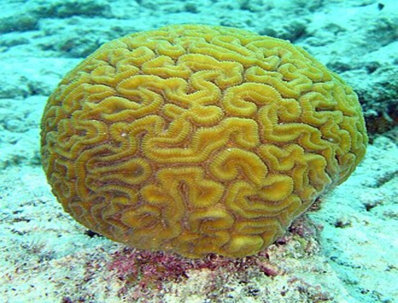

Коралл (лат. Alcyoneum) — материал скелета колонии коралловых полипов. Большие скопления кораллов формируют коралловые рифы и коралловые острова. Рост кораллов составляет обычно даже в благоприятных условиях не более 1 см в год в продольном направлении, поэтому на образование среднего рифа могут уйти столетия, острова — тысячелетия.
Типичные мозговые кораллы растут прежде всего в тропиках, где вода остаётся теплой весь год. Из-за их твёрдой структуры мозговые кораллы могут жить в океанских потоках и сильных волнах. Более тонкие пластинчатые кораллы могут выжить только в защищённых лагунах или более глубокой воде. Крупные, твёрдые коралловые головы часто служат «станцией очистки» для некоторых видов животных и рыб. Они трутся о кораллы, убирая мёртвую кожу или паразитов. Ультрафиолетовый свет может навредить кораллам на мелководье. Если уменьшение защитного озонового слоя Земли позволит большему количеству ультрафиолетового излучения достигать земли, кораллы могут исчезнуть из такой среды обитания, как мелководье. Самый большой коралловый риф находится вблизи северо-восточного побережья Австралии. Он простирается на расстояние 2200 км.
Известны свыше 6000 видов кораллов, в их палитре различают до 350 цветовых оттенков. Цвет кораллов зависит от состава и количества органических соединений: встречаются не только розовые, но и красные, голубые, белые и чёрные кораллы. Твёрдый скелет некоторых видов кораллов используется как сырьё для получения извести, некоторые виды — для изготовления ювелирных украшений. В последнем случае особо ценятся чёрный («аккабар»), белый и серебристо-перламутровый («кожа ангела»); самые популярные цвета — красный и розовый («благородный коралл»). Чаще всего для украшений используют благородный коралл, окрашенный в различные оттенки розового и красного цвета. Также кораллы нашли применение в медицине и косметологии (коралловый пилинг). В Китае и Индии добывают чёрные кораллы. Как и в случае с жемчугом, высокая стоимость натуральных кораллов приводит к большому количеству подделок. Законом некоторых стран, например, Египта и Таиланда, вывоз кораллов за пределы территории государства запрещён. По состоянию на февраль 2015 года попытка вывоза коралла из Египта наказывается штрафом в размере 1000 долларов США.